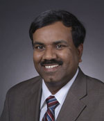
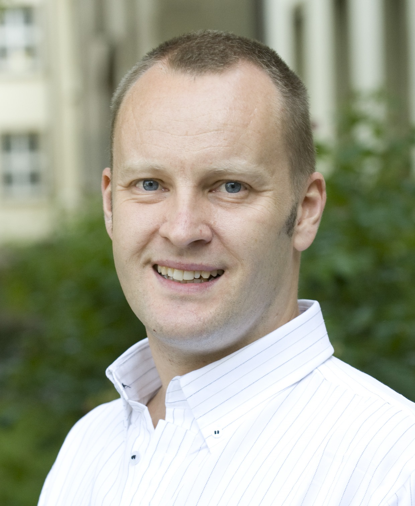
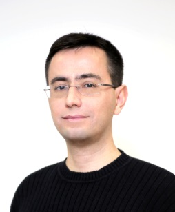

Schedule
| 8:30 - 8:40 | Opening Remarks |
| 8:40 - 9:20 | Keynote 1: Onur Mutlu (ETH, CMU)
“Accelerating Genome Analysis: A Primer on an Ongoing Journey” |
| 09:20 - 09:40 | Mohammed Alser+, Hasan Hassan*, Akash Kumar&, Onur Mutlu* and Can Alkan+ (+Bilkent Univ., *ETH Zurich, &TU Dresden)
Exploring Speed/Accuracy Trade-offs |
| 09:20 - 09:40 | Lisa Wu, Frank Nothaft, Brendan Sweeney, David Bruns-Smith, Sagar Karandikar, Johnny Le, Howard Mao, Krste Asanovic, David Patterson and Anthony Joseph (UC Berkeley)
Accelerating Duplicate Marking In The Cloud |
| 10:00 - 10:30 | Coffee break |
| 10:30 - 11:10 | Invited Talk: Bertil Schmidt (JGU Mainz)
“Next-Generation Sequencing: Big Data meets High Performance Computing Architectures” |
| 11:10 - 11:30 | Wenqin Huangfu+, Zhenhua Zhu*, Tianqi Tang+, Xing Hu+, Yu Wang* and Yuan Xie+ (+UCSB, *Tsinghua University)
GAME: GPU Acceleration of Metagenomics Clustering |
| 11:30 - 11:50 | Jose M. Herruzo+, Sonia Gonzalez-Navarro+, Pablo Ibañez*, Victor Viñals*, Jesus Alastruey* and Oscar Plata+ (+Univ. of Malaga, *Univ. of Zaragoza)
Exact Alignment with FM-index on the Intel Xeon Phi Knights Landing Processor |
| 11:50 - 12:10 | Zheming Jin and Kazutomo Yoshii (ANL)
Optimizations of Sequence Alignment on FPGA: A Case Study of Extended Sequence Alignment |
| 12:10 - 13:30 | Lunch |
| 13:30 - 14:10 | Keynote 2: Srinivas Aluru (Georgia Tech)
“Automata Processor and its Applications in Bioinformatics” |
| 14:10 - 14:30 | Tommy Tracy Ii, Jack Wadden, Kevin Skadron and Mircea Stan (UVA)
Streaming Gap-Aware Seed Alignment on the Cache Automaton |
| 14:30 - 14:50 | Roman Kaplan, Leonid Yavits and Ran Ginosar (Technion)
Processing-in-Storage Architecture for Large-Scale Biological Sequence Alignment |
| 14:50 - 15:10 | Xueqi Li, Guangming Tan, Yuanrong Wang and Ninghui Sun (ICT)
The Genomic Benchmark Suite: Characterization and Architecture Implications |
| 15:10 - 15:30 | Coffee break |
| 15:30 - 16:10 | Invited Talk: Can Alkan (Bilkent University)
"Addressing Computational Burden to Realize Precision Medicine" |
| 16:10 - 16:30 | Sergiu Mosanu and Mircea Stan (UVA)
Burrows-Wheeler Short Read Aligner on AWS EC2 F1 |
| 16:30 - 16:50 | Angélica Alejandra Serrano-Rubio, Amilcar Meneses-Viveros, Guillermo B. Morales-Luna and Mireya Paredes-López (CINVESTAV-IPN)
Towards BIMAX: Binary Inclusion-MAXimal parallel implementation for gene expression analysis |
| 16:50 - 17:00 | Short break |
| 14:10 - 14:30 | Meysam Taassori+, Anirban Nag+, Keeton Hodgson+, Ali Shafiee* and Rajeev Balasubramonian+ (+Univ. of Utah, *Samsung Electronics)
Memory: The Dominant Bottleneck in Genomic Workloads |
| 14:30 - 14:50 | Meysam Roodi and Andreas Moshovos (Univ. of Toronto)
Gene Sequencing: Where Time Goes |
| 14:50 - 15:10 | Calvin Bulla, Lluc Alvarez and Miquel Moreto (BSC)
Are Next-Generation HPC Systems Ready for Population-level Genomics Data Analytics? |
| 17:45 - 17:50 | Closing remarks |
Social Event |
|
| 18:15 | Bus leaves to social event (Heurigen) |
Keynote Talks
-

Onur Mutlu, CMU / ETH Zurich
“Accelerating Genome Analysis: A Primer on an Ongoing Journey”
8:40 - 9:20
Talk abstract: TBD
-

Srinivas Aluru, Georgia Tech
“Automata Processor and its Applications in Bioinformatics”
13:30-14:10
Talk abstract: This talk will introduce the Micron Automata Processor (AP), a novel computing architecture that enables massively parallel execution of numerous non-deterministic finite automata. The processor inspires a new programming paradigm of solving problems using complex pattern matching engines executed over streaming data. The first part of this talk will focus on the processor characteristics, programming and execution environment, and design principles we discovered that are of value in developing applications on the AP. The second part will feature my group's research on developing bioinformatics algorithms for the AP including database search and motif detection.
Invited Talks
-

Bertil Schmidt, JGU Mainz
“Next Generation Sequencing: Big Data meets High Performance Computing Architectures”
10:30-11:10
Talk abstract: The progress of NGS has a major impact on medical and genomic research. This high-throughput technology can now produce billions of short DNA fragments in excess of a few Terabytes of data in a single run. This leads to massive datasets used by a wide range of applications including personalized cancer treatment and precision medicine. In addition to the hugely increased throughput, the cost of using high-throughput technologies has been dramatically decreasing. Low sequencing cost of around US$1K per genome has now rendered large population-scale projects feasible. However, in order to make effective use of the produced data, the design of big data algorithms and their efficient implementation on modern HPC systems is required. In this talk, I will present the design of scalable algorithms for metagenomic read classification and for massively parallel hash maps on multi-GPU nodes.
-

Can Alkan, Bilkent University
"Addressing Computational Burden to Realize Precision Medicine"
15:30-16:10
Talk abstract: TBD